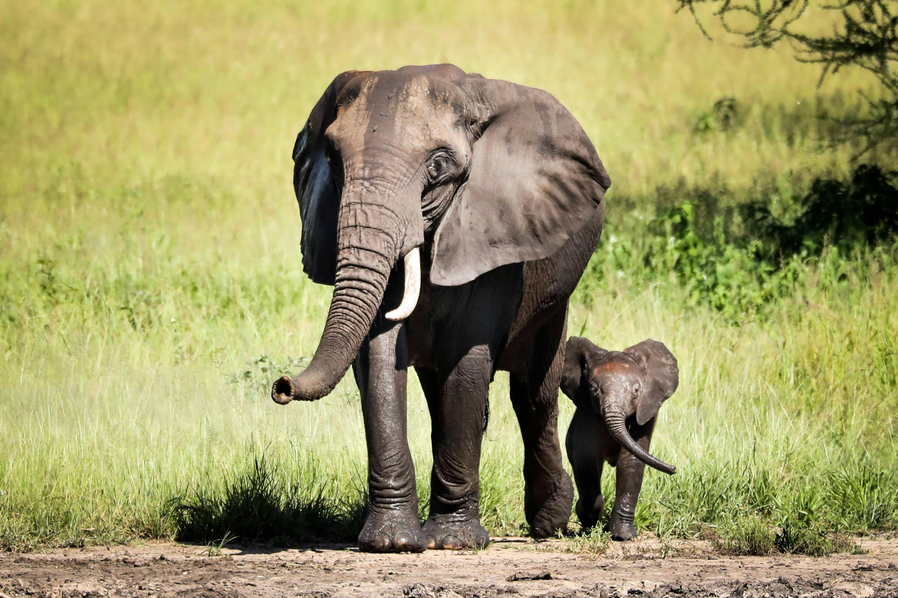
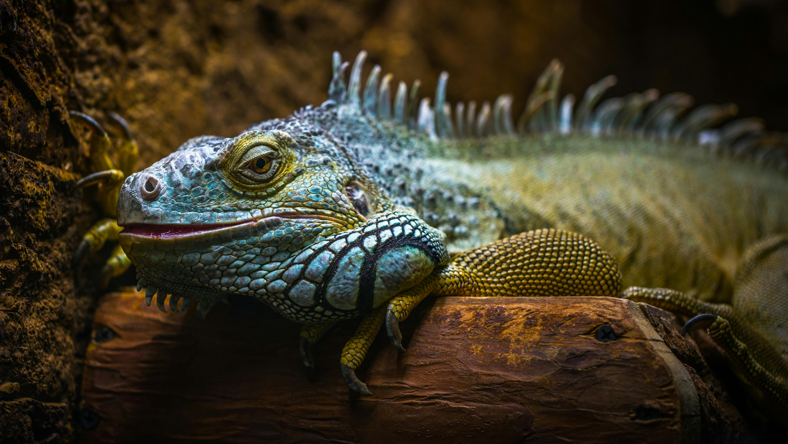

Hayvanlar Alemi
Hayvan Çeşitliliği Hakkında Kısa Bilgiler: 1,5 milyondan fazla hayvan
türü tanımlanmıştır. 7 milyondan fazla türün var olduğu tahmin
edilmektedir. Omurgalılar ve omurgasızlar olmak üzere iki ana gruba
ayrılırlar. Farklı habitatlarda yaşarlar. Ekosistemlerde önemli bir
rol oynarlar. Yaşam alanlarının tahribatı, kaçak avlanma ve kirlilik
gibi unsurlar tarafından tehdit edilmektedir. Korumak için: Yaşam
alanlarını korumak, kaçak avcılıkla mücadele etmek ve bilinçlendirme
çalışmaları yapmak önemlidir. Hayvan çeşitliliği, Dünya'nın biyolojik
dengesinin korunması için çok önemlidir.
Memeliler
Sıcakkanlı ve omurgalı hayvanlardır. Vücutları kıllar ile kaplıdır.
Yavrularını doğurarak dünyaya getirirler. Yavrularını sütle
beslerler. Kalpleri dört odacıklıdır. Akciğerleriyle nefes alırlar.
Beyinlerinin neokorteks bölgesi bulunur.

Sürüngenler
Sıcakkanlı ve omurgalı hayvanlardır. Vücutları kıllar ile kaplıdır.
Yavrularını doğurarak dünyaya getirirler. Yavrularını sütle
beslerler. Kalpleri dört odacıklıdır. Akciğerleriyle nefes alırlar.
Beyinlerinin neokorteks bölgesi bulunur.

Kuşlar
Sıcakkanlı ve omurgalı hayvanlardır. Vücutları kıllar ile kaplıdır.
Yavrularını doğurarak dünyaya getirirler. Yavrularını sütle
beslerler. Kalpleri dört odacıklıdır. Akciğerleriyle nefes alırlar.
Beyinlerinin neokorteks bölgesi bulunur.